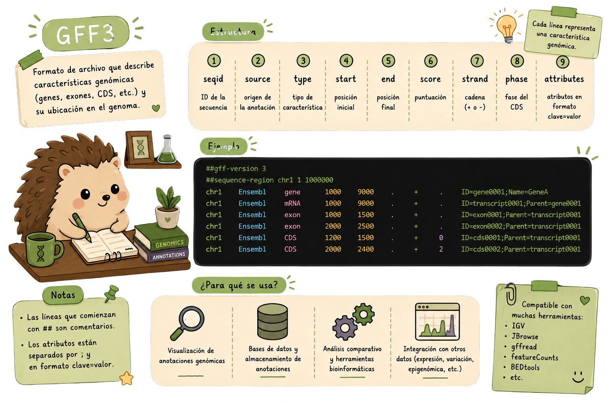

6 Anotaciones GFF3
Antes de escribir un filtro, primero identifica qué representa cada columna del archivo. En GFF3, cada línea describe una característica anotada sobre una secuencia, como un gen, transcrito, exón o CDS.
Los archivos GFF3 describen características anotadas sobre secuencias genómicas. A diferencia de FASTA o FASTQ, aquí no estamos almacenando únicamente secuencias: estamos almacenando información estructurada sobre regiones, como genes, transcritos, exones, CDS y otras características.
Un archivo GFF3 contiene nueve columnas separadas por tabuladores. Algunas indican dónde se encuentra una característica y qué tipo de característica es, mientras que la última columna contiene atributos adicionales, como identificadores y relaciones entre elementos.
Por ejemplo:
chr1 . gene 1000 5000 . + . ID=gene001
En este registro:
$1 → secuencia o cromosoma (chr1)
$3 → tipo de característica (gene)
$4 → posición inicial (1000)
$5 → posición final (5000)
$7 → hebra (+)
$9 → atributos (ID=gene001)
Este formato permite hacer preguntas como: ¿cuántos genes hay?, ¿qué genes están en un cromosoma?, ¿cuánto mide cada gen? o ¿qué identificadores tienen las características anotadas?
6.1 Operaciones sobre archivos GFF3
Una vez que conocemos la estructura del archivo, podemos utilizar herramientas como grep, cut, sort, uniq, perl, awk y bioawk para extraer y resumir información.
Los siguientes ejemplos muestran algunas tareas comunes al trabajar con anotaciones.
# Listar todas las secuencias anotadas
cut -s -f1,9 anotaciones.gff3 | grep $'\t' | cut -f1 | sort | uniq
# Tipos de features disponibles
grep -v '^#' anotaciones.gff3 | cut -s -f3 | sort | uniq
# Contar genes totales
grep -c $'\tgene\t' anotaciones.gff3
# Extraer todos los IDs de genes
grep $'\tgene\t' anotaciones.gff3 | perl -ne '/ID=([^;]+)/ and printf("%s\n", $1)'
# Longitud de cada gen
grep $'\tgene\t' anotaciones.gff3 | cut -s -f4,5 | \
perl -ne '@v = split(/\t/); printf("%d\n", $v[1] - $v[0] + 1)'
# Crear tabla transcrito → gen desde GTF de GENCODE
bioawk -c gff '$feature=="transcript" {print $group}' gencode.v28.annotation.gtf | \
awk -F ' ' '{print substr($4,2,length($4)-3) "\t" substr($2,2,length($2)-3)}' > txp2gene.tsvEstos ejemplos muestran algunas formas de trabajar con la información contenida en un GFF3:
cutpermite seleccionar columnas.greppermite buscar tipos de features o patrones específicos.sortyuniqayudan a obtener valores únicos.awkyperlpermiten realizar operaciones sobre los datos y extraer información de los atributos.bioawkpermite trabajar directamente con formatos de anotación.
Dado un archivo genome.gff3, construye un pipeline que:
- Extraiga todos los genes del cromosoma
chr1 - Calcule la longitud de cada gen (fin - inicio + 1)
- Filtre los genes con longitud > 10,000 bp
- Reporte: ID del gen, inicio, fin, longitud, ordenados por longitud descendente
- Guarde en
chr1_genes_largos.tsv
grep $'\tgene\t' genome.gff3 | \
awk '$1 == "chr1"' | \
awk 'BEGIN{OFS="\t"; print "gene_id\tinicio\tfin\tlongitud"}
{
len = $5 - $4 + 1
if (len > 10000) {
# Extraer el gene_id del campo de atributos ($9)
match($9, /ID=([^;]+)/, arr)
print arr[1], $4, $5, len
}
}' | \
sort -k4nr > chr1_genes_largos.tsv
echo "Genes con longitud > 10kb en chr1:"
wc -l chr1_genes_largos.tsv
head -5 chr1_genes_largos.tsv